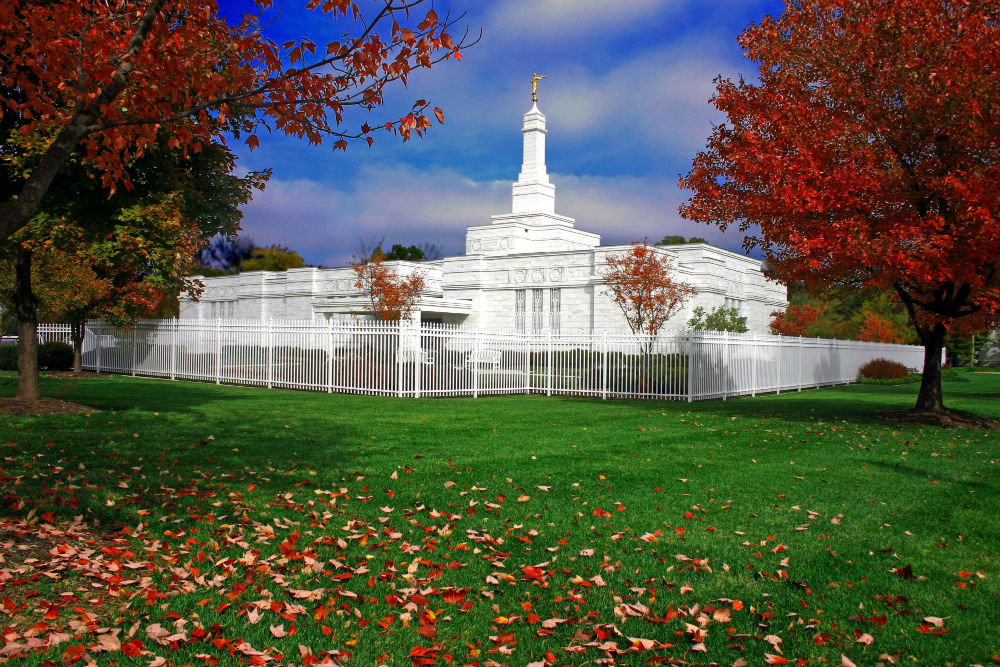

Columbus Ohio Temple
 The Columbus Ohio Temple is located 150 miles south of Kirtland, Ohio, where the restored Church of Jesus Christ dedicated its first temple in 1836. The temple stands in a wooded area of western Columbus adjacent to a meetinghouse in the Columbus Ohio Stake. The beautiful white Vermont marble facing on the exterior was quarried near Sharon, Vermont, the birthplace of the Prophet Joseph Smith.The Columbus Ohio Temple is the first of the currently operating temples built in Ohio and the second of the Latter-day Saint temples built in Ohio, following the Kirtland Temple (1836).
Shortly after construction began on the Columbus Ohio Temple, the floor plan was altered to include an additional room where patrons who had traveled long distances could eat and change clothes before presenting themselves at the recommend desk.
Ownership of the temple site has ties to Julia Clapp Murdock, a devoted member who lived in Kirtland at the time of Joseph Smith. On April 30, 1831, Julia passed away after giving birth to twins on the same day that Emma gave birth to twins who died shortly after birth. Julia's husband asked the Prophet and Emma to care for the twins, feeling he was unable. The gesture helped softened Emma's sorrow. Julia's father, Orris, was a member of Sidney Rigdon's congregation, who eventually became embittered toward the Church and left New York for Ohio accompanied by his brother, Abner Clapp. Upon their arrival, Abner purchased the land where the temple now stands. Records indicate he was the land's first owner, and as far as can be ascertained, he did not share his brother's animosity toward the Church.